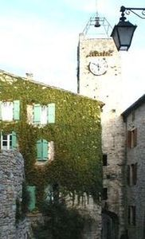
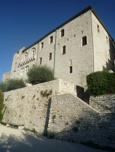
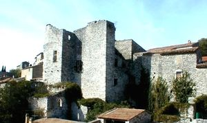
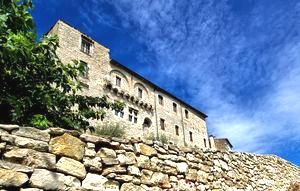
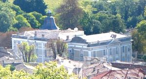
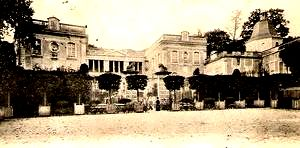
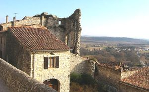

Recensement Jean-Claude Truffet
| Département | 30 — Gard |
| Canton | Alès |
| Commune | Vézénobres |
| Type d'édifice | Château vestiges |
| Période d'origine | XIV-XVIII |







Plusieurs châteaux à Vézénobres, château de Fay-Pérault mairie et les vestiges de Fay-Pérault, les vestiges du fort de Montaréches du XIVe siècle, Calvières et Girard. VEZENOBRES, fut une seigneurie vassale de la maison d'Anduze. Il semblerait qu'elle ait eu une certaine importance au XIIe siècle aux seigneurs d'Uzès, au XVIe siècle l'hôtel de Montfaucon des seigneurs de Vénezobres y habitèrent délaissant le château féodal qui fut construit en 1309 par Guillaume de Plasian, la baronnie passa au baron de Laudun, en 1485 Claude de Montfaucon racheta à son frère Guillaume de Laudun, passa aux Lesgrange et alliance aux Fay-Pérault en 1541. En 1628 l'armée de Rohan détruisit le château et les fortifications. La baronnie passa aux Calvière baron de Boucoiran, le château de Calvière pour le compte de Charles François de Calvière.
CALVIERE, château conçu vers 1750 par le marquis de Calvière, Alphonse de Calvière seigneur de Vézénobres. Charles-François de Calvière, officier de la Garde Royale, épousa en 1733 Françoise Olympe de Boucoiran, fille d'Alphonse de Calvière, seigneur de Vézénobres et de Boucoiran. Devenu marquis de Vézénobres et baron de Boucoiran, Charles-François décida de construire à Vézénobres un château (1740-1750) avec l'appui de l'architecte Guillaume Rollin d'Alès. Apprécié de Louis XV, le marquis souhaita que ce château symbolise sa réussite. Pour ce faire, il s'inspira fortement du château de Versailles. Légué en 1870 au comte de Bernis neveu par alliance, Le château appartient aujourd'hui à ses descendants, les Bernis de Calvière.
GIRARD coseigneurs de Vézenobres, construit par la famille de Girard au XIVe siècle leur descendance échangèrent le château contre la suppression des impôts. le marquis de Thoiras a vendu le château à la communauté au XVIIe siècle qui devient l'hotel de ville de Vézenobres.
Vezenobres, les vestiges du fort et des enceintes de Fay-Perault, médiéval construit au XIIe siècle, le seul vestige visible aujourdhui est un pan de mur de 30 m de haut. il fut agrandi et rehaussé dans le style Renaissance au début du XVe siècle et il fut détruit le 15 Juin 1625.
Calvière, château féodal du XVe siècle, remanié au XVIIIe siècle, bâtiment flanqué de deux ailes à façade classique avec fronton triangulaire, colonnade et escalier en fer à cheval, cour d'honneur fermée par des grilles en fer forgé. Ce château fastueux présente une combinaison de classicisme versaillais et de baroque italien. Girard, château féodal du XIVe siècle, les soubassements du château abritent l'hôtel de ville loffice de tourisme. Depuis laccueil, on peut découvrir lancien mécanisme de lhorloge, située au-dessus de la Porte Sabran, datant de la fin du XIXe siècle. Ce magnifique ouvrage a été patiemment remis en état de marche grâce aux bons soins de Jean-Pierre Natanek, passionné dhorlogerie, ce château était intégré aux fortifications urbaines, lesquelles furent durement mises à mal pendant les guerres de religion. Côté Sud, le château présente encore une imposante allure. Porte de Sabran, au XVIIIe siècle, elle a été surmontée d'un clocher et de l'horloge. En descendant la rue de l'Horloge, une fois la porte franchie, on remarque l'amorce du mur des remparts et le chemin de ronde sur les hauteurs de la porte, cette dernière doit son nom à la famille Sabran, l'une des plus illustres familles de Provence et du Languedoc qui trôna, dès le XIe siècle, sur le Duché d'Uzès et la baronnie de Sabran.
Famille des Montfaucon Famille d'Alphonse de Calvière
"
Vestiges du fort de Vézénobres, porte de Sabran, château de Girard et de Calvière.